An entertainment company · Long Island City, NY
The classics never go out of style.
We develop and produce content classics — pictures built to be watched again in thirty years, not scrolled past in thirty seconds.
The new site is in final assembly
(212) Pictures (310) Pictures New Renaissance Cinema